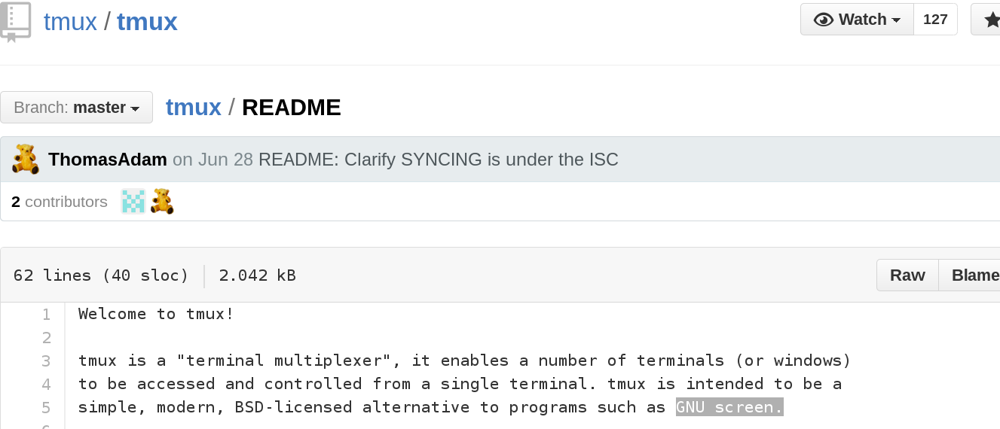
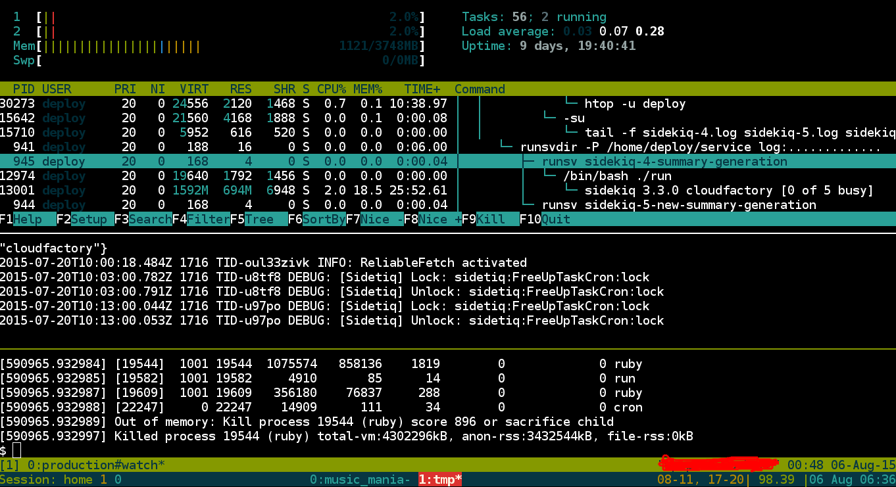

Being Productive
CONTENTS:
- tmux & tmuxinator
- vi [presenter: xhagrg]
- brower plugins
- shell-tips/tricks
- TMUX/TMUXINATOR
- TMUX
- use-case:
- iTerm2 startup in early morning …will be show in demo
- watching over irritating logs on server
- tired of screen-process #hard to collaborate
- intro:

Figure 2: Tmux Readme
- tmux in action:

Figure 3: Tmux in action
- use-case:
- TMUXINATOR
its a gem to manage the tmux session
- step1: installtion
gem install tmuxinator
- step2: configuration
$ export EDITOR=your_awesome_editor $ mux new your_awesome_project_name #yamal config generated at ~/.tmuxinator/
- step3: run
$ mux your_awesome_project_name
- demo:
- Extra for iTerm Users
first detatch ctrl+a d and:
$ tmux ls $ tmux -CC attach -t session_name
- step1: installtion
- TMUX
- VI
- modal editing of file, Eg: w for word; who needs to remember that
- self.quit() reason: me eamcs aficionado- vim & packages
- vim: improved vi
- pkgs:
- nerdtree
- fugitive
- ctrlp
- pkgmgmt pkgs:
- vundler
- pathogen
- Browser Plugins
- TIPS/TRICKS
- picpaste
motivation: share local image with at go
# http://www.picpaste.com/ :Put your pictures online, easy and quick # Storage time: 30mins(1) to unlimited(9) # Supported formats: Only JP(E)G, PNG, GIF, BMP # Size limit =< 7 megabyte picpaste () { opts=( -F storetime=1 -F addprivacy=1 -F rules=yes ) link=http://www.picpaste.com/upload.php curl -sA firefox "${opts[@]}" -F upload=@"$1" "$link" \ | sed -n '/Picture URL/{n;s/.*">//;s/<.*//p}' }
- gist
The gist gem provides a gist command that you can use from your terminal to upload content to https://gist.github.com/.
$ gem install gist #installing gist $ gist -Pp -f filname.rb #private gist from clipboard $ gist --login #to login to github $ gist -h #further exploration
- my personal favorites
- need to share your aws export to your friend
env| grep -i aws | nc -l 1234 #then give http://your.192.168.ip:1234 to your friend
- history search with ease
- make an alias hist
alias hist='history | grep $1' #merge of grep and history
- Eg: forgot your old crontab command ??
$ hist crontab 7857 crontab -e 8478 cfssh my-prod-serverXY2 -l deploy 'crontab -l' 9577 crontab -l
- make an alias hist
- नेट लास्टै slow छ हो ??
mtr -n github.com
- tired of ps aux|grep sidekiq && kill -9 XXXX
pgrep -fil sidekiq # to know your process pkill -STOP sidekiq # stop the sidkiq process
DISCLAIMER: DON'T TRY IT IN
HOMEPRODUCTION - etc
- helper function
mkcd () { mkdir "$1";cd "$1"} #make dir and enter inside at one go
- managing multiple aws keys
source ~/.my_aws_keys_for && run deployment syntax - less is more
less ~/app/logs/production.log #use it like readonly mode of vi
- kill the tmux session
tmux ls # list the running session tmux kill-session -t my_session_name #kill the session
- helper function
- need to share your aws export to your friend
- More awesome stuffs/ Refrences
- picpaste